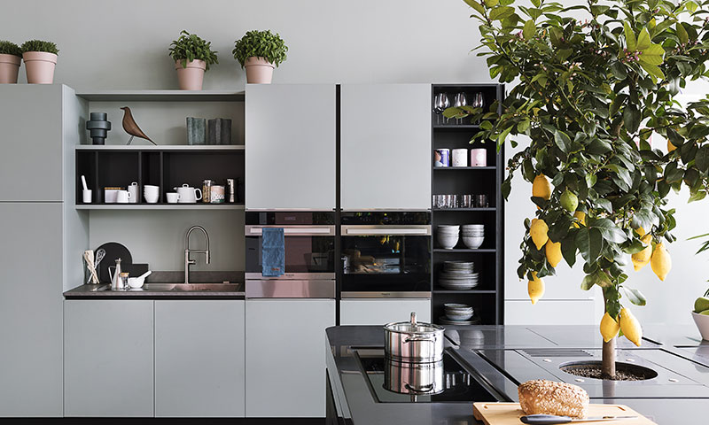

가전
맞벌이 부부와 1인 가구, 이들의 삼신가전 사랑을 식을 줄 모르고 있습니다.
삼신가전은 가사 부담을 덜어줄 세 가지 신의 가전제품이라는 뜻으로 의료건조기, 식기세척기, 로봇청소기를 말합니다.
삼신가전은 신혼부부의 필수 혼수로 잡리잡아 없어서는 안될 존재가 되었습니다.
편리미엄과 일맥상통하는 삼신가전은 정말이지 신이 내린 가전제품이라고 불릴 만합니다.
'육아는 장비빨'이라는 말도 편리미엄과 떠어놓을 수 없습니다. 갖가지 장비로 편리하게 육아를 한다는 뜻인데,
일과 육아를 병행하는 맞벌이 부부가 시간을 효율적으로 쓸 수 있는 제품이 출시 중입니다.
미용실에서처럼 아이를 눕혀 빠르게 머리를 감길 수 있는 아이용 샴푸 의자,
유축하는 동안 두 손으로 다른 일을 할 수 있는 핸즈프리 유축기 등을 예로 들 수 있습니다.